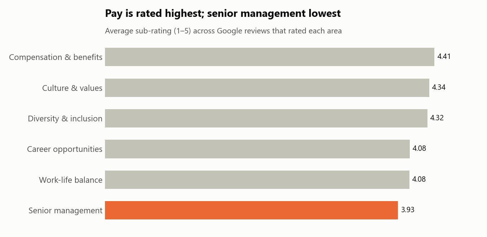

Inside the Search Giant
Text mining 14,702 Glassdoor reviews of Google with SBERT and K-Means clustering to find what drives employee sentiment.
View project →Hi, I'm
MS Business Analytics student at California State Polytechnic University, Pomona · Data Analysis · Business Analytics · Business Operations
Get in touchI’m a master’s student at California State Polytechnic University, Pomona, pursuing an MS in Business Analytics. I also hold an undergraduate degree in Technology and Operations Management.
My professional background is rooted in business operations, manufacturing, and project management. Growing up around my family’s furniture manufacturing business, along with gaining experience in different manufacturing environments, helped me develop a strong understanding of business processes and operational efficiency.
These experiences motivated me to further develop my knowledge through my studies in technology and operations management. Over time, my interest in using data and technology to evaluate processes, identify inefficiencies, and support better decision-making led me to pursue a master’s degree in Business Analytics.
Today, I am passionate about data analysis, process improvement, data-driven decision-making, and using modern technologies to help solve business problems.

Text mining 14,702 Glassdoor reviews of Google with SBERT and K-Means clustering to find what drives employee sentiment.
View project →
A Python backtest of a 50/200-day moving average strategy against buy-and-hold for AAPL, MSFT, AMZN, GOOGL and NVDA (2020–2024).
View project →Master of Science in Business Analytics
Bachelor's in Technology and Operations Management
Associate Degree in Business Administration
Certificate in Business Management
Want to work together or just say hi? Reach out: